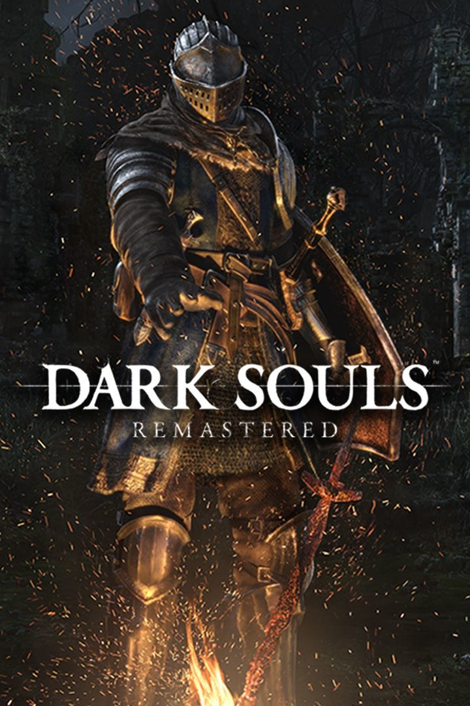

Souls-like games generally have common elements like high difficulty, high-risk combat with hard-hitting enemies, sparse checkpoints, and enemies dropping souls (or some other resource used for upgrading stats and/or weapons that is lost upon death), but the player has one chance to regain the dropped souls if they can reach the place of their death without dying again.
| Game Title | Cover Art | Price | Meta Score |
|---|---|---|---|
| Dark Souls 1 |  | $39.99 | 84 |
| Dark souls 2 |  |
$39.99 | 87 |
| Dark Souls 3 |  |
$59.99 | 89 |